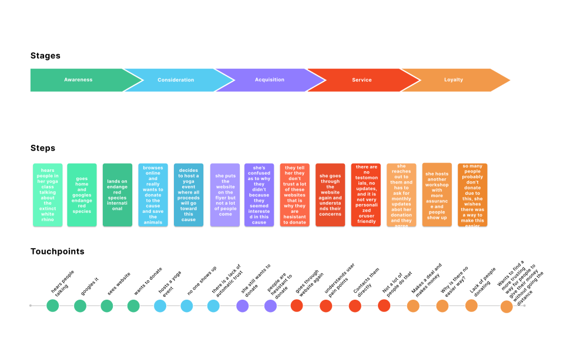

Step 1: Empathize
Before we began our designing project we decided to conduct some quick interviews on donations, what causes people to donate, why people donate, and about the website in general.
We used a short survey we created via google form and sent
it out to our contacts and also posted it all over social media.
Based on the results that we received from our survey we decided to:
-Add a volunteer option which was easier to find
-Lower our costs of donation on the donation page sopeople would not have to make as big of a commitment
-Personalized the website by adding names to the animals
-Added more transparency
by highlighting the impacts we are currently making
Empathizing with the user is a very important process in the process of designing for a user. We created a proto-persona at first of our target user and conducted our user journey frame by putting ourselves in the shoes of that user. Through our survey results, we were able to really understand the users who would normally be attracted by a website like this and their emotions.We also conducted usability tests of the original website in order to determine the user journey. Many people are scared of commitment, especially when the website itself does not seem to be trustworthy and transparent with where their money is going.

We initially created wireframes to test out and to see what users had to say about them.
We created low-fid wireframes and within them, we found a lot we could do in order to iterate our final design. We designed these using primarily
Figma.
The iterations we had from our testing was:
-Easier navigation to donate page, but make it less commitment
-More animations, make the experience more interactive
-Put something on the homepage which touches users and motivates them to donate


We had a lot of problems deciding on the color palette for this project. We were choosing between two but still plan to do color testing on users to figure out which one to incorporate.
We used very earthy colors for the final iteration.
As of right now we have only designed for the web, but are still working on mobile designs for this website.
Some details which really filled us with pride were the information buttons on the corner, the final logo, and the overall layering and hierarchy of information we were presenting to the user.
Getting rid of the overall clutter of the website and focusing on the main goals of it achieved usability goals and donation goals.


Some key-takeaways we came to during our iteration process were to further develop our events page and our impact page. Due to the tight timeline, we had while completing this redesign there were definitely a couple of pages we were not able to tackle within our redesign. Luckily, our design was able to tackle whichever parts of the process that many users had difficulties with like being more inclusive toward our users and creating a more transparent platform in terms of where their donation money was going and the impacts it was causing. In terms of the UI for the website, we were able to ease usability by changing up some navigation factors throughout the site and adding a more clear, aesthetic, and user-friendly design to it. Some things we would definitely do in order to continue to improve our website within our next set of iterations would be to do some testing on the placement of the information buttons, do color testing with two different palettes to see what calls out to the user more, and work on fully fleshing out our events and impact page on the website itself by creating some more screens which follow it.